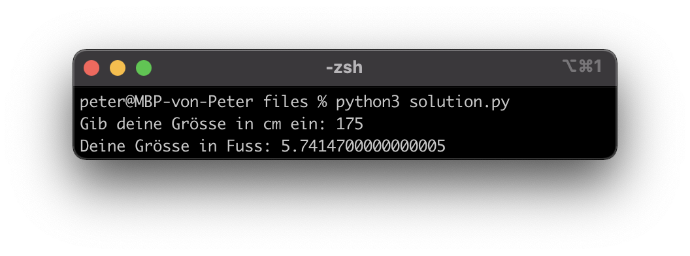

Sie verstehen das Prinzip einer Variable und können dieses Wissen in einem Programm umsetzen
Sie kennen die vier wichtigsten Datentypen und können diese (falls nötig) umwandeln
Eine Variable ist ein Behälter, um Daten zu speichern (vgl. Mathematik).
name = "Christian" # Variable erstellen und Wert zuweisen
print(name) # Output: Christian
name = 3 # Variable überschreiben
print(name) # Output: 3
name = input("Gib deinen Namen ein: ") # Benutzereingabe (String)
print("Dein Name ist: " + name) # Output: ?(Eine Variable sollte so benannt werden, dass jeder weiss, um was es geht z. B. nameOhneLetzerBuchstabe = “Christia”)
Jede Variable hat einen Datentyp. Die vier wichtigsten:
Manchmal muss man Datentypen umwandeln
x = "Monat "
y = 12
print(x + y) # funktioniert nicht und macht keinen Sinn
x = "Monat "
y = 12
print(x + str(y)) # Output: Monat 12Die Umwandlungsfunktionen sind analog zu den Datentypen:
In Amerika ist die Längeneinheit “Fuss” (ft) auch heute noch in Gebrauch. 1 ft entspricht dabei 30.48 cm bzw. 1 cm entspricht 0.032808 ft.
|  |
Erstellen Sie ein Programm, welches cm in ft umrechnet. Wie gross sind sie in Fuss?